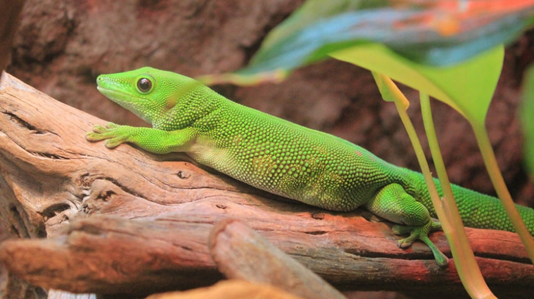
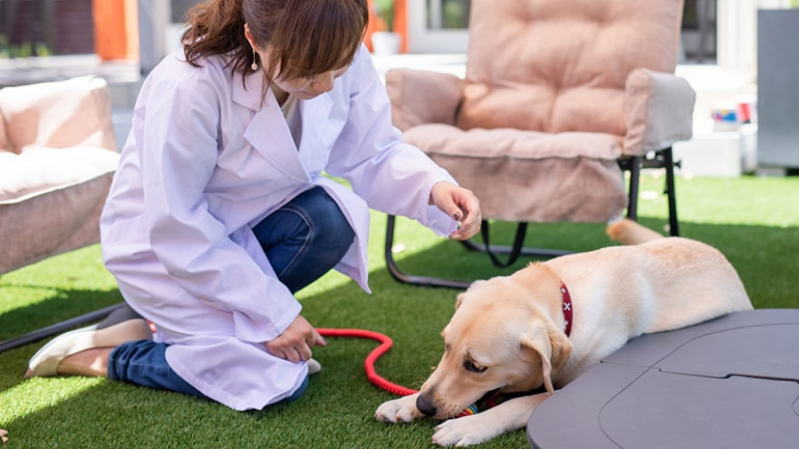
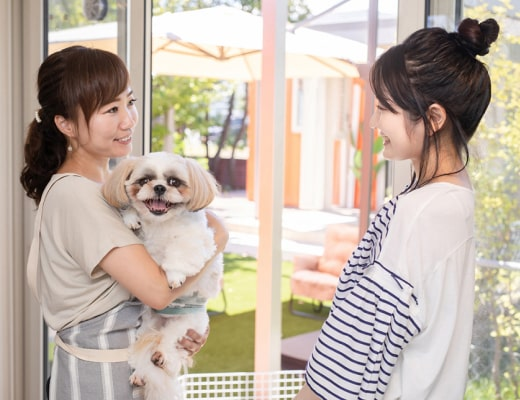
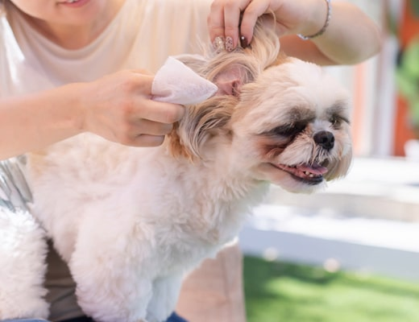

滑石きたむら動物病院は
大切な家族の
ホームドクターです
動物たちの健康で幸せな生活をサポート
当院は地域に密着し、皆さまの大切な家族の一員である動物たちのホームドクターを目指しています。
緊急時だけではなく、日常のちょっとした不安や違和感などお気軽にご相談ください。
動物たちが健康で幸せな生活を送ることができるようサポートいたします。
強み
経験豊富なスタッフが24時間365日常駐
当院は24時間365日いつでも対応できるよう、豊富な経験を持つ獣医師や看護師が約50名体制で常駐しております。
エキゾチックアニマルも対応します
犬・猫だけではなく、ウサギやハムスター、爬虫類や両生類、鳥類などエキゾチックアニマルも対応しております。

ご自宅まで伺う往診も行っています
外出が難しい動物たちや飼い主さまのために、獣医師や看護師がご自宅まで伺う往診サービスも行っております。

サービス

往診サービス
シニアや介護などのペットのための自宅で診療するサービスです。

ペットホテル
短時間の一時預かりから宿泊までご利用いただけるサービスです。

トリミング
動物の体に負担をかけない技術や液剤を使用いたします。